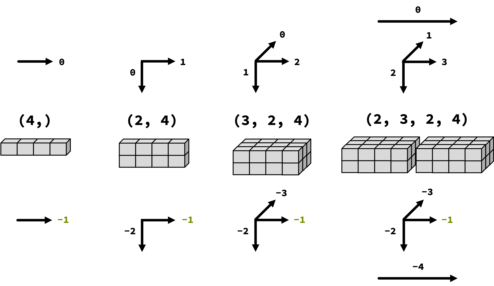
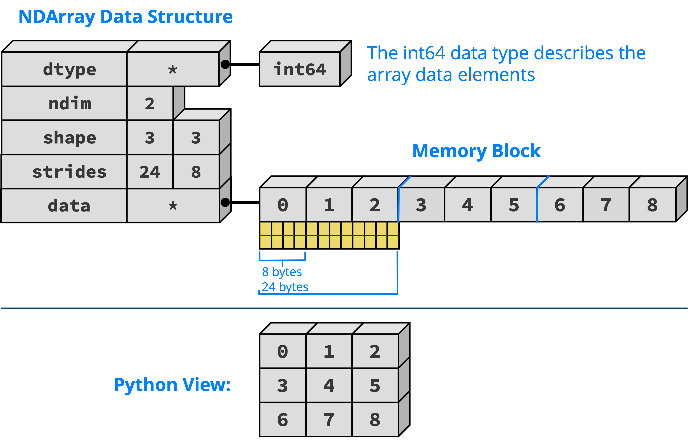
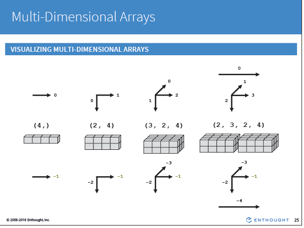

Numpy#
Table of Contents#
Intro to numpy arrays#
import numpy as np
np.__version__
'2.3.3'
# why numpy ?
# use lists for array addtion
a = [1, 2, 3, 4, 5]
b = [11, 12, 13, 14, 15]
a+b
[1, 2, 3, 4, 5, 11, 12, 13, 14, 15]
sumab = []
for i in range(len(a)):
sumab.append(a[i]+b[i])
# sumab.append(sum([a[i],b[i]]))
sumab
[12, 14, 16, 18, 20]
sumab = [a[i]+b[i] for i in range(len(a))]
sumab
[12, 14, 16, 18, 20]
a = np.array([1, 2, 3, 4, 5])
b = np.array([11, 12, 13, 14, 15])
print(a+b)
[12 14 16 18 20]
Data types -#
See the full list here
int8, uint8 - Signed and unsigned 8-bit (1 byte) integer types
int16, uint16 - Signed and unsigned 16-bit integer types
int32, uint32 - Signed and unsigned 32-bit integer types
int64, uint64 - Signed and unsigned 64-bit integer types
float16 - Half-precision floating point
float32 - Standard single-precision floating point; compatible with C float
float64 - Standard double-precision floating point
float128 - Extended-precision floating point
complex64, complex128, complex256 - Complex numbers represented by two 32, 64, or 128 floats, respectively
bool - Boolean type storing True and False values
string - Fixed-length ASCII string type (1 byte per character); for example, to create a string data type with length 10, use ‘S10’
a_str = np.array(['3.2', '4.1','6.7'], dtype=np.bytes_)
print(a_str.dtype)
print(a_str)
b = a_str.astype(np.float16)
print(b.dtype)
print(b)
|S3
[b'3.2' b'4.1' b'6.7']
float16
[3.2 4.1 6.7]
Similarity between NumPy Array and list#
list: [,]
Dynamically typed
Ordered
Mutable values
Mutable length
numpy.ndarray: array([,])
Statically typed
Ordered
Mutable values
Immutable length
Differences between NumPy Array and list#
Feature |
Python List |
NumPy Array |
|---|---|---|
Data types |
Can hold mixed types ( |
All elements must be the same type ( |
Storage |
Each element is a Python object (slower, more memory) |
Stored in contiguous memory (efficient, compact) |
Math operations |
Not supported element-wise: |
Element-wise operations: |
Performance |
Slower for numerical computations |
Much faster (uses C under the hood) |
Dimensions |
One-dimensional (nested lists for 2D, but clumsy) |
Supports true multi-dimensional arrays (1D, 2D, nD) |
Functions |
Basic built-in functions ( |
Rich library: linear algebra, FFT, statistics, reshaping, broadcasting |
Indexing & slicing |
Simple indexing & slicing only |
Advanced indexing: slices, masks, boolean conditions, broadcasting |
Best use case |
General purpose, mixed data, small collections |
Large numerical data, scientific/matrix computations |
Creating numpy arrays#
https://wesmckinney.com/book/numpy-basics.html
# create one dimensional array
a = np.array([1,2,3,5])
type(a)
numpy.ndarray
a.dtype
dtype('int64')
a = np.array([1.3, 2.4, 4.5])
a.dtype
dtype('float64')
a.ndim
1
a = np.asarray([3,4,6])
print(type(a))
<class 'numpy.ndarray'>
a.dtype
dtype('int64')
# shape returns a tuple listing the length of the arrays
a.shape
(3,)
# numpy is for the same data type only
a[0] = 10.4
a
array([10, 4, 6])
#create a two dimensional array
a = np.array([[1,2,4,5,6,7,8],[5,6,7,8, 12, 9, 21]])
a
array([[ 1, 2, 4, 5, 6, 7, 8],
[ 5, 6, 7, 8, 12, 9, 21]])
a.dtype
dtype('int64')
a.shape
(2, 7)
a.ndim
2
a[1,0:3]
array([5, 6, 7])
a[1][0:3]
array([5, 6, 7])
# create a 3D array with 2-D arrays
a = np.array([ [ [1,2,3], [4,5,6], [7,8,9]], [[10,11,12],[13,14,15], [16,17,18]] ])
a.shape
(2, 3, 3)
a = np.array([ [[1,2,3], [4,5,6]], [[10,11,12],[13,14,15]] ])
a.shape
(2, 2, 3)
a = np.array([ [[1,2,3,3],[4,5,6,6]], [[10,11,12,12],[13,14,15,15]],[[100,110,120,120],[130,140,150,150]] ])
a.shape
(3, 2, 4)
a = np.array([1, 2, 3.,4])
a.dtype
dtype('float64')
# itemsize() function returns the length of one array element in bytes.
a.itemsize
8
# numpy.ndarray.nbytes() function returns the total bytes consumed by the elements of the array.
# = num of elem*itemsize
a.nbytes
32
a = np.array([1, 2, 3.,255, 256], dtype ='uint8')
print(a)
print(a.dtype)
print(a.itemsize)
print(a.nbytes)
---------------------------------------------------------------------------
OverflowError Traceback (most recent call last)
Cell In[27], line 1
----> 1 a = np.array([1, 2, 3.,255, 256], dtype ='uint8')
2 print(a)
3 print(a.dtype)
OverflowError: Python integer 256 out of bounds for uint8
a = np.array([1, 2, 3.,257], dtype ='uint32')
print(a)
print(a.dtype)
print(a.itemsize)
print(a.nbytes)
[ 1 2 3 257]
uint32
4
16
a = np.array([1, 2, 3.,257], dtype ='float64')
print(a)
print(a.dtype)
print(a.itemsize)
print(a.nbytes)
[ 1. 2. 3. 257.]
float64
32
8
More on creating arrays#
In addition to np.array, there are additional ways to create special arrays
arange()
linespace()
array()
zeros()
ones()
full(n,filled value)
arange()#
Generate an array of values in the range [start, stop). arange([start,] stop [, step], dtype = None). Similar to python range() function. Default dtype is derived from the start, stop and step values
np.arange(5)
array([0, 1, 2, 3, 4])
np.arange(0,5,2)
array([0, 2, 4])
np.arange(0, 6, 2)
array([0, 2, 4])
# When using a non-integer step, such as 0.1, the results will often not be consistent.
# It is better to use numpy.linspace for these cases.
np.arange(1.0, 5.0, 1.0)
array([1., 2., 3., 4.])
np.arange(1.5, 2.1, 0.3)
array([1.5, 1.8, 2.1])
linespace()#
Generate N evenly spaced elements between (and including) start and stop values
np.linspace(0, 2, 11)
array([0. , 0.2, 0.4, 0.6, 0.8, 1. , 1.2, 1.4, 1.6, 1.8, 2. ])
np.linspace(0, 1, 4)
array([0. , 0.33333333, 0.66666667, 1. ])
array()#
a = np.array([[1, 2, 3, 4], [5, 6, 7, 8], [9, 10, 11, 12]])
a
array([[ 1, 2, 3, 4],
[ 5, 6, 7, 8],
[ 9, 10, 11, 12]])
zeros()#
np.zeros((2,3), dtype='float64')
array([[0., 0., 0.],
[0., 0., 0.]])
ones()#
np.ones( (4,5), dtype='uint8')
array([[1, 1, 1, 1, 1],
[1, 1, 1, 1, 1],
[1, 1, 1, 1, 1],
[1, 1, 1, 1, 1]], dtype=uint8)
a = np.zeros(5, dtype=int)
print(a)
#np.empty() - Return a new array of given shape and type, without initializing entries.
#empty , unlike numpy. zeros , does not set the array values to zero and,
b = np.empty(5, dtype=int)
print(b)
[0 0 0 0 0]
[89351328 509 0 0 1]
[89351328 509 0 0 1]
a = np.ones(5)
print(a)
#numpy.ones_like() - Return an array of ones with the same shape and type as a given array.
a = np.ones_like(3)
print(a)
x = np.arange(6)
x = x.reshape((2, 3))
x
np.ones_like(x)
[1. 1. 1. 1. 1.]
1
array([[1, 1, 1],
[1, 1, 1]])
a = np.full(5,4)
print(a)
[4 4 4 4 4]
Loading Text Files #
np.loadtxt?
Signature:
np.loadtxt(
fname,
dtype=<class 'float'>,
comments='#',
delimiter=None,
converters=None,
skiprows=0,
usecols=None,
unpack=False,
ndmin=0,
encoding=None,
max_rows=None,
*,
quotechar=None,
like=None,
)
Docstring:
Load data from a text file.
Parameters
----------
fname : file, str, pathlib.Path, list of str, generator
File, filename, list, or generator to read. If the filename
extension is ``.gz`` or ``.bz2``, the file is first decompressed. Note
that generators must return bytes or strings. The strings
in a list or produced by a generator are treated as lines.
dtype : data-type, optional
Data-type of the resulting array; default: float. If this is a
structured data-type, the resulting array will be 1-dimensional, and
each row will be interpreted as an element of the array. In this
case, the number of columns used must match the number of fields in
the data-type.
comments : str or sequence of str or None, optional
The characters or list of characters used to indicate the start of a
comment. None implies no comments. For backwards compatibility, byte
strings will be decoded as 'latin1'. The default is '#'.
delimiter : str, optional
The character used to separate the values. For backwards compatibility,
byte strings will be decoded as 'latin1'. The default is whitespace.
.. versionchanged:: 1.23.0
Only single character delimiters are supported. Newline characters
cannot be used as the delimiter.
converters : dict or callable, optional
Converter functions to customize value parsing. If `converters` is
callable, the function is applied to all columns, else it must be a
dict that maps column number to a parser function.
See examples for further details.
Default: None.
.. versionchanged:: 1.23.0
The ability to pass a single callable to be applied to all columns
was added.
skiprows : int, optional
Skip the first `skiprows` lines, including comments; default: 0.
usecols : int or sequence, optional
Which columns to read, with 0 being the first. For example,
``usecols = (1,4,5)`` will extract the 2nd, 5th and 6th columns.
The default, None, results in all columns being read.
unpack : bool, optional
If True, the returned array is transposed, so that arguments may be
unpacked using ``x, y, z = loadtxt(...)``. When used with a
structured data-type, arrays are returned for each field.
Default is False.
ndmin : int, optional
The returned array will have at least `ndmin` dimensions.
Otherwise mono-dimensional axes will be squeezed.
Legal values: 0 (default), 1 or 2.
encoding : str, optional
Encoding used to decode the inputfile. Does not apply to input streams.
The special value 'bytes' enables backward compatibility workarounds
that ensures you receive byte arrays as results if possible and passes
'latin1' encoded strings to converters. Override this value to receive
unicode arrays and pass strings as input to converters. If set to None
the system default is used. The default value is None.
.. versionchanged:: 2.0
Before NumPy 2, the default was ``'bytes'`` for Python 2
compatibility. The default is now ``None``.
max_rows : int, optional
Read `max_rows` rows of content after `skiprows` lines. The default is
to read all the rows. Note that empty rows containing no data such as
empty lines and comment lines are not counted towards `max_rows`,
while such lines are counted in `skiprows`.
.. versionchanged:: 1.23.0
Lines containing no data, including comment lines (e.g., lines
starting with '#' or as specified via `comments`) are not counted
towards `max_rows`.
quotechar : unicode character or None, optional
The character used to denote the start and end of a quoted item.
Occurrences of the delimiter or comment characters are ignored within
a quoted item. The default value is ``quotechar=None``, which means
quoting support is disabled.
If two consecutive instances of `quotechar` are found within a quoted
field, the first is treated as an escape character. See examples.
.. versionadded:: 1.23.0
like : array_like, optional
Reference object to allow the creation of arrays which are not
NumPy arrays. If an array-like passed in as ``like`` supports
the ``__array_function__`` protocol, the result will be defined
by it. In this case, it ensures the creation of an array object
compatible with that passed in via this argument.
.. versionadded:: 1.20.0
Returns
-------
out : ndarray
Data read from the text file.
See Also
--------
load, fromstring, fromregex
genfromtxt : Load data with missing values handled as specified.
scipy.io.loadmat : reads MATLAB data files
Notes
-----
This function aims to be a fast reader for simply formatted files. The
`genfromtxt` function provides more sophisticated handling of, e.g.,
lines with missing values.
Each row in the input text file must have the same number of values to be
able to read all values. If all rows do not have same number of values, a
subset of up to n columns (where n is the least number of values present
in all rows) can be read by specifying the columns via `usecols`.
The strings produced by the Python float.hex method can be used as
input for floats.
Examples
--------
>>> import numpy as np
>>> from io import StringIO # StringIO behaves like a file object
>>> c = StringIO("0 1\n2 3")
>>> np.loadtxt(c)
array([[0., 1.],
[2., 3.]])
>>> d = StringIO("M 21 72\nF 35 58")
>>> np.loadtxt(d, dtype={'names': ('gender', 'age', 'weight'),
... 'formats': ('S1', 'i4', 'f4')})
array([(b'M', 21, 72.), (b'F', 35, 58.)],
dtype=[('gender', 'S1'), ('age', '<i4'), ('weight', '<f4')])
>>> c = StringIO("1,0,2\n3,0,4")
>>> x, y = np.loadtxt(c, delimiter=',', usecols=(0, 2), unpack=True)
>>> x
array([1., 3.])
>>> y
array([2., 4.])
The `converters` argument is used to specify functions to preprocess the
text prior to parsing. `converters` can be a dictionary that maps
preprocessing functions to each column:
>>> s = StringIO("1.618, 2.296\n3.141, 4.669\n")
>>> conv = {
... 0: lambda x: np.floor(float(x)), # conversion fn for column 0
... 1: lambda x: np.ceil(float(x)), # conversion fn for column 1
... }
>>> np.loadtxt(s, delimiter=",", converters=conv)
array([[1., 3.],
[3., 5.]])
`converters` can be a callable instead of a dictionary, in which case it
is applied to all columns:
>>> s = StringIO("0xDE 0xAD\n0xC0 0xDE")
>>> import functools
>>> conv = functools.partial(int, base=16)
>>> np.loadtxt(s, converters=conv)
array([[222., 173.],
[192., 222.]])
This example shows how `converters` can be used to convert a field
with a trailing minus sign into a negative number.
>>> s = StringIO("10.01 31.25-\n19.22 64.31\n17.57- 63.94")
>>> def conv(fld):
... return -float(fld[:-1]) if fld.endswith("-") else float(fld)
...
>>> np.loadtxt(s, converters=conv)
array([[ 10.01, -31.25],
[ 19.22, 64.31],
[-17.57, 63.94]])
Using a callable as the converter can be particularly useful for handling
values with different formatting, e.g. floats with underscores:
>>> s = StringIO("1 2.7 100_000")
>>> np.loadtxt(s, converters=float)
array([1.e+00, 2.7e+00, 1.e+05])
This idea can be extended to automatically handle values specified in
many different formats, such as hex values:
>>> def conv(val):
... try:
... return float(val)
... except ValueError:
... return float.fromhex(val)
>>> s = StringIO("1, 2.5, 3_000, 0b4, 0x1.4000000000000p+2")
>>> np.loadtxt(s, delimiter=",", converters=conv)
array([1.0e+00, 2.5e+00, 3.0e+03, 1.8e+02, 5.0e+00])
Or a format where the ``-`` sign comes after the number:
>>> s = StringIO("10.01 31.25-\n19.22 64.31\n17.57- 63.94")
>>> conv = lambda x: -float(x[:-1]) if x.endswith("-") else float(x)
>>> np.loadtxt(s, converters=conv)
array([[ 10.01, -31.25],
[ 19.22, 64.31],
[-17.57, 63.94]])
Support for quoted fields is enabled with the `quotechar` parameter.
Comment and delimiter characters are ignored when they appear within a
quoted item delineated by `quotechar`:
>>> s = StringIO('"alpha, #42", 10.0\n"beta, #64", 2.0\n')
>>> dtype = np.dtype([("label", "U12"), ("value", float)])
>>> np.loadtxt(s, dtype=dtype, delimiter=",", quotechar='"')
array([('alpha, #42', 10.), ('beta, #64', 2.)],
dtype=[('label', '<U12'), ('value', '<f8')])
Quoted fields can be separated by multiple whitespace characters:
>>> s = StringIO('"alpha, #42" 10.0\n"beta, #64" 2.0\n')
>>> dtype = np.dtype([("label", "U12"), ("value", float)])
>>> np.loadtxt(s, dtype=dtype, delimiter=None, quotechar='"')
array([('alpha, #42', 10.), ('beta, #64', 2.)],
dtype=[('label', '<U12'), ('value', '<f8')])
Two consecutive quote characters within a quoted field are treated as a
single escaped character:
>>> s = StringIO('"Hello, my name is ""Monty""!"')
>>> np.loadtxt(s, dtype="U", delimiter=",", quotechar='"')
array('Hello, my name is "Monty"!', dtype='<U26')
Read subset of columns when all rows do not contain equal number of values:
>>> d = StringIO("1 2\n2 4\n3 9 12\n4 16 20")
>>> np.loadtxt(d, usecols=(0, 1))
array([[ 1., 2.],
[ 2., 4.],
[ 3., 9.],
[ 4., 16.]])
File: c:\users\wenge\.conda\envs\sds\lib\site-packages\numpy\lib\_npyio_impl.py
Type: function
np.loadtxt('data/wind_simple.data')
array([[61. , 1. , 1. , ..., 12.58, 18.5 , 15.04],
[61. , 1. , 2. , ..., 9.67, 17.54, 13.83],
[61. , 1. , 3. , ..., 7.67, 12.75, 12.71],
...,
[78. , 12. , 29. , ..., 16.42, 18.88, 29.58],
[78. , 12. , 30. , ..., 12.12, 14.67, 28.79],
[78. , 12. , 31. , ..., 11.38, 12.08, 22.08]], shape=(6574, 15))
print(data.dtype)
print(data.ndim)
float64
2
# predefined dtype
wind_dtype = [
('year', int),
('month', int),
('day', int),
('wind', float, (12,)),
]
data = np.loadtxt('data/wind_simple.data', dtype=wind_dtype)
data
array([(61, 1, 1, [15.04, 14.96, 13.17, 9.29, 13.96, 9.87, 13.67, 10.25, 10.83, 12.58, 18.5 , 15.04]),
(61, 1, 2, [14.71, 16.88, 10.83, 6.5 , 12.62, 7.67, 11.5 , 10.04, 9.79, 9.67, 17.54, 13.83]),
(61, 1, 3, [18.5 , 16.88, 12.33, 10.13, 11.17, 6.17, 11.25, 8.04, 8.5 , 7.67, 12.75, 12.71]),
...,
(78, 12, 29, [14. , 10.29, 14.42, 8.71, 9.71, 10.54, 19.17, 12.46, 14.5 , 16.42, 18.88, 29.58]),
(78, 12, 30, [18.5 , 14.04, 21.29, 9.13, 12.75, 9.71, 18.08, 12.87, 12.46, 12.12, 14.67, 28.79]),
(78, 12, 31, [20.33, 17.41, 27.29, 9.59, 12.08, 10.13, 19.25, 11.63, 11.58, 11.38, 12.08, 22.08])],
shape=(6574,), dtype=[('year', '<i8'), ('month', '<i8'), ('day', '<i8'), ('wind', '<f8', (12,))])
data['wind']
array([[15.04, 14.96, 13.17, ..., 12.58, 18.5 , 15.04],
[14.71, 16.88, 10.83, ..., 9.67, 17.54, 13.83],
[18.5 , 16.88, 12.33, ..., 7.67, 12.75, 12.71],
...,
[14. , 10.29, 14.42, ..., 16.42, 18.88, 29.58],
[18.5 , 14.04, 21.29, ..., 12.12, 14.67, 28.79],
[20.33, 17.41, 27.29, ..., 11.38, 12.08, 22.08]], shape=(6574, 12))
data['wind'].shape
(6574, 12)
print(data['year'].shape)
data['year']
(6574,)
array([61, 61, 61, ..., 78, 78, 78], shape=(6574,))
# Read only certain columns
data = np.loadtxt('data/wind_simple.data', usecols = (3,5)) # 4th and 6th columns
data
array([[15.04, 13.17],
[14.71, 10.83],
[18.5 , 12.33],
...,
[14. , 14.42],
[18.5 , 21.29],
[20.33, 27.29]], shape=(6574, 2))
Loadd data using genfromtxt#
Open wind.data and take a look. It has a blank row, a header row, and missing values, shown by NaN
np.genfromtxt has more flexibility (but can be a little slower sometimes). Explore np.genfromtxt’s skip_header, names, and missing_values keyword arguments.
Use
np.genfromtxtto load the more-complicated data inwind.data.Create
windthat has just the wind speed measurements.
np.genfromtxt?
Signature:
np.genfromtxt(
fname,
dtype=<class 'float'>,
comments='#',
delimiter=None,
skip_header=0,
skip_footer=0,
converters=None,
missing_values=None,
filling_values=None,
usecols=None,
names=None,
excludelist=None,
deletechars=" !#$%&'()*+,-./:;<=>?@[\\]^{|}~",
replace_space='_',
autostrip=False,
case_sensitive=True,
defaultfmt='f%i',
unpack=None,
usemask=False,
loose=True,
invalid_raise=True,
max_rows=None,
encoding=None,
*,
ndmin=0,
like=None,
)
Docstring:
Load data from a text file, with missing values handled as specified.
Each line past the first `skip_header` lines is split at the `delimiter`
character, and characters following the `comments` character are discarded.
Parameters
----------
fname : file, str, pathlib.Path, list of str, generator
File, filename, list, or generator to read. If the filename
extension is ``.gz`` or ``.bz2``, the file is first decompressed. Note
that generators must return bytes or strings. The strings
in a list or produced by a generator are treated as lines.
dtype : dtype, optional
Data type of the resulting array.
If None, the dtypes will be determined by the contents of each
column, individually.
comments : str, optional
The character used to indicate the start of a comment.
All the characters occurring on a line after a comment are discarded.
delimiter : str, int, or sequence, optional
The string used to separate values. By default, any consecutive
whitespaces act as delimiter. An integer or sequence of integers
can also be provided as width(s) of each field.
skiprows : int, optional
`skiprows` was removed in numpy 1.10. Please use `skip_header` instead.
skip_header : int, optional
The number of lines to skip at the beginning of the file.
skip_footer : int, optional
The number of lines to skip at the end of the file.
converters : variable, optional
The set of functions that convert the data of a column to a value.
The converters can also be used to provide a default value
for missing data: ``converters = {3: lambda s: float(s or 0)}``.
missing : variable, optional
`missing` was removed in numpy 1.10. Please use `missing_values`
instead.
missing_values : variable, optional
The set of strings corresponding to missing data.
filling_values : variable, optional
The set of values to be used as default when the data are missing.
usecols : sequence, optional
Which columns to read, with 0 being the first. For example,
``usecols = (1, 4, 5)`` will extract the 2nd, 5th and 6th columns.
names : {None, True, str, sequence}, optional
If `names` is True, the field names are read from the first line after
the first `skip_header` lines. This line can optionally be preceded
by a comment delimiter. Any content before the comment delimiter is
discarded. If `names` is a sequence or a single-string of
comma-separated names, the names will be used to define the field
names in a structured dtype. If `names` is None, the names of the
dtype fields will be used, if any.
excludelist : sequence, optional
A list of names to exclude. This list is appended to the default list
['return','file','print']. Excluded names are appended with an
underscore: for example, `file` would become `file_`.
deletechars : str, optional
A string combining invalid characters that must be deleted from the
names.
defaultfmt : str, optional
A format used to define default field names, such as "f%i" or "f_%02i".
autostrip : bool, optional
Whether to automatically strip white spaces from the variables.
replace_space : char, optional
Character(s) used in replacement of white spaces in the variable
names. By default, use a '_'.
case_sensitive : {True, False, 'upper', 'lower'}, optional
If True, field names are case sensitive.
If False or 'upper', field names are converted to upper case.
If 'lower', field names are converted to lower case.
unpack : bool, optional
If True, the returned array is transposed, so that arguments may be
unpacked using ``x, y, z = genfromtxt(...)``. When used with a
structured data-type, arrays are returned for each field.
Default is False.
usemask : bool, optional
If True, return a masked array.
If False, return a regular array.
loose : bool, optional
If True, do not raise errors for invalid values.
invalid_raise : bool, optional
If True, an exception is raised if an inconsistency is detected in the
number of columns.
If False, a warning is emitted and the offending lines are skipped.
max_rows : int, optional
The maximum number of rows to read. Must not be used with skip_footer
at the same time. If given, the value must be at least 1. Default is
to read the entire file.
encoding : str, optional
Encoding used to decode the inputfile. Does not apply when `fname`
is a file object. The special value 'bytes' enables backward
compatibility workarounds that ensure that you receive byte arrays
when possible and passes latin1 encoded strings to converters.
Override this value to receive unicode arrays and pass strings
as input to converters. If set to None the system default is used.
The default value is 'bytes'.
.. versionchanged:: 2.0
Before NumPy 2, the default was ``'bytes'`` for Python 2
compatibility. The default is now ``None``.
ndmin : int, optional
Same parameter as `loadtxt`
.. versionadded:: 1.23.0
like : array_like, optional
Reference object to allow the creation of arrays which are not
NumPy arrays. If an array-like passed in as ``like`` supports
the ``__array_function__`` protocol, the result will be defined
by it. In this case, it ensures the creation of an array object
compatible with that passed in via this argument.
.. versionadded:: 1.20.0
Returns
-------
out : ndarray
Data read from the text file. If `usemask` is True, this is a
masked array.
See Also
--------
numpy.loadtxt : equivalent function when no data is missing.
Notes
-----
* When spaces are used as delimiters, or when no delimiter has been given
as input, there should not be any missing data between two fields.
* When variables are named (either by a flexible dtype or with a `names`
sequence), there must not be any header in the file (else a ValueError
exception is raised).
* Individual values are not stripped of spaces by default.
When using a custom converter, make sure the function does remove spaces.
* Custom converters may receive unexpected values due to dtype
discovery.
References
----------
.. [1] NumPy User Guide, section `I/O with NumPy
<https://docs.scipy.org/doc/numpy/user/basics.io.genfromtxt.html>`_.
Examples
--------
>>> from io import StringIO
>>> import numpy as np
Comma delimited file with mixed dtype
>>> s = StringIO("1,1.3,abcde")
>>> data = np.genfromtxt(s, dtype=[('myint','i8'),('myfloat','f8'),
... ('mystring','S5')], delimiter=",")
>>> data
array((1, 1.3, b'abcde'),
dtype=[('myint', '<i8'), ('myfloat', '<f8'), ('mystring', 'S5')])
Using dtype = None
>>> _ = s.seek(0) # needed for StringIO example only
>>> data = np.genfromtxt(s, dtype=None,
... names = ['myint','myfloat','mystring'], delimiter=",")
>>> data
array((1, 1.3, 'abcde'),
dtype=[('myint', '<i8'), ('myfloat', '<f8'), ('mystring', '<U5')])
Specifying dtype and names
>>> _ = s.seek(0)
>>> data = np.genfromtxt(s, dtype="i8,f8,S5",
... names=['myint','myfloat','mystring'], delimiter=",")
>>> data
array((1, 1.3, b'abcde'),
dtype=[('myint', '<i8'), ('myfloat', '<f8'), ('mystring', 'S5')])
An example with fixed-width columns
>>> s = StringIO("11.3abcde")
>>> data = np.genfromtxt(s, dtype=None, names=['intvar','fltvar','strvar'],
... delimiter=[1,3,5])
>>> data
array((1, 1.3, 'abcde'),
dtype=[('intvar', '<i8'), ('fltvar', '<f8'), ('strvar', '<U5')])
An example to show comments
>>> f = StringIO('''
... text,# of chars
... hello world,11
... numpy,5''')
>>> np.genfromtxt(f, dtype='S12,S12', delimiter=',')
array([(b'text', b''), (b'hello world', b'11'), (b'numpy', b'5')],
dtype=[('f0', 'S12'), ('f1', 'S12')])
File: c:\users\wenge\.conda\envs\sds\lib\site-packages\numpy\lib\_npyio_impl.py
Type: function
data = np.genfromtxt('data/wind.data', skip_header = 2, dtype = wind_dtype)
data
array([(61, 1, 1, [15.04, 14.96, 13.17, 9.29, nan, 9.87, 13.67, 10.25, 10.83, 12.58, 18.5 , 15.04]),
(61, 1, 2, [14.71, nan, 10.83, 6.5 , 12.62, 7.67, 11.5 , 10.04, 9.79, 9.67, 17.54, 13.83]),
(61, 1, 3, [18.5 , 16.88, 12.33, 10.13, 11.17, 6.17, 11.25, nan, 8.5 , 7.67, 12.75, 12.71]),
...,
(78, 12, 29, [14. , 10.29, 14.42, 8.71, 9.71, 10.54, 19.17, 12.46, 14.5 , 16.42, 18.88, 29.58]),
(78, 12, 30, [18.5 , 14.04, 21.29, 9.13, 12.75, 9.71, 18.08, 12.87, 12.46, 12.12, 14.67, 28.79]),
(78, 12, 31, [20.33, 17.41, 27.29, 9.59, 12.08, 10.13, 19.25, 11.63, 11.58, 11.38, 12.08, 22.08])],
shape=(6574,), dtype=[('year', '<i8'), ('month', '<i8'), ('day', '<i8'), ('wind', '<f8', (12,))])
# use names to pull field names from the header rows.
# Note that it overwrites the field names in the structured dtype.
data = np.genfromtxt('data/wind.data', skip_header=1, names=True, dtype = wind_dtype)
data
array([(61, 1, 1, [15.04, 14.96, 13.17, 9.29, nan, 9.87, 13.67, 10.25, 10.83, 12.58, 18.5 , 15.04]),
(61, 1, 2, [14.71, nan, 10.83, 6.5 , 12.62, 7.67, 11.5 , 10.04, 9.79, 9.67, 17.54, 13.83]),
(61, 1, 3, [18.5 , 16.88, 12.33, 10.13, 11.17, 6.17, 11.25, nan, 8.5 , 7.67, 12.75, 12.71]),
...,
(78, 12, 29, [14. , 10.29, 14.42, 8.71, 9.71, 10.54, 19.17, 12.46, 14.5 , 16.42, 18.88, 29.58]),
(78, 12, 30, [18.5 , 14.04, 21.29, 9.13, 12.75, 9.71, 18.08, 12.87, 12.46, 12.12, 14.67, 28.79]),
(78, 12, 31, [20.33, 17.41, 27.29, 9.59, 12.08, 10.13, 19.25, 11.63, 11.58, 11.38, 12.08, 22.08])],
shape=(6574,), dtype=[('Yr', '<i8'), ('Mo', '<i8'), ('Dy', '<i8'), ('RPT', '<f8', (12,))])
data.dtype.names
('Yr', 'Mo', 'Dy', 'RPT')
data['RPT']
array([[15.04, 14.96, 13.17, ..., 12.58, 18.5 , 15.04],
[14.71, nan, 10.83, ..., 9.67, 17.54, 13.83],
[18.5 , 16.88, 12.33, ..., 7.67, 12.75, 12.71],
...,
[14. , 10.29, 14.42, ..., 16.42, 18.88, 29.58],
[18.5 , 14.04, 21.29, ..., 12.12, 14.67, 28.79],
[20.33, 17.41, 27.29, ..., 11.38, 12.08, 22.08]], shape=(6574, 12))
Missing Data in NumPy#
NumPy uses np.nan - “not a number” to represent missing or invalid data.
np.mean(data['RPT'])
np.float64(nan)
np.nanmean(data['RPT'])
np.float64(10.227883764282181)
Array shape and structure#
Dimensions and axis#
a = np.arange(24)
print(a)
[ 0 1 2 3 4 5 6 7 8 9 10 11 12 13 14 15 16 17 18 19 20 21 22 23]
a.shape
(24,)
Shape Definition and Manipulation#
a.shape = (4, 6)
a
array([[ 0, 1, 2, 3, 4, 5],
[ 6, 7, 8, 9, 10, 11],
[12, 13, 14, 15, 16, 17],
[18, 19, 20, 21, 22, 23]])
a.reshape(2,12)
array([[ 0, 1, 2, 3, 4, 5, 6, 7, 8, 9, 10, 11],
[12, 13, 14, 15, 16, 17, 18, 19, 20, 21, 22, 23]])
Convention on Display of Dimensions

Array Data Structure#

a = np.arange(24)
a
array([ 0, 1, 2, 3, 4, 5, 6, 7, 8, 9, 10, 11, 12, 13, 14, 15, 16,
17, 18, 19, 20, 21, 22, 23])
a.shape = (2,12)
a.strides
(96, 8)
Slicing and indexing arrays#
Slicing in python means taking elements from one given index to another given index, like this: [start:end:step]. The lower-bound is inclusive, the upper-bound is exclusive.
No upperbound if start = 0, no lower bound if end = length of dimension+1.
If step == 1, we pass slice like this: [start:end]
Numpy array slicing works like standard python slicing.
a = np.array([1,2,3,4,5,6])
a[1:3]
array([2, 3])
a[:3:2]
array([1, 3])
a = np.array([[1,2,4,5,6,7,8],[5,6,7,8, 12, 9, 21]])
a
array([[ 1, 2, 4, 5, 6, 7, 8],
[ 5, 6, 7, 8, 12, 9, 21]])
a[-1,1:3]
array([6, 7])
a[1::2,:3:2]
array([[5, 7]])
print(a)
a[0]
[[ 1 2 4 5 6 7 8]
[ 5 6 7 8 12 9 21]]
array([1, 2, 4, 5, 6, 7, 8])
# create an array using arange and reshape
a = np.arange(25).reshape(5,5)
a
array([[ 0, 1, 2, 3, 4],
[ 5, 6, 7, 8, 9],
[10, 11, 12, 13, 14],
[15, 16, 17, 18, 19],
[20, 21, 22, 23, 24]])
# print column 2 and 4, and last row
a[-1,1:4:2]
array([21, 23])
a[:,1:4:2]
array([[ 1, 3],
[ 6, 8],
[11, 13],
[16, 18],
[21, 23]])
# slicing
a[:,1]
array([ 1, 6, 11, 16, 21])
a[:, -2]
array([ 3, 8, 13, 18, 23])
a[:,::2]
array([[ 0, 2, 4],
[ 5, 7, 9],
[10, 12, 14],
[15, 17, 19],
[20, 22, 24]])
Fancy Indexing - Indexing by positions#
Array indexing is the same as accessing an array element. You can access an array element by referring to its index number. The indexes in NumPy arrays start with 0, meaning that the first element has index 0, and the second has index 1.
a = np.arange(0, 80, 10)
print(a)
[ 0 10 20 30 40 50 60 70]
# get items
indices = [1, 2, -3]
y = a[indices]
y = a[[1,2,-3]]
y
array([10, 20, 50])
#set item values
a[indices] = 100
a
array([ 0, 100, 100, 30, 40, 100, 60, 70])
#a[[r1, r2], [c1, c2]] → picks elements (r1, c1) and (r2, c2).
a[[0,2],[2,3]]
array([ 2, 15])
a = np.arange(36).reshape(6,6)
a
array([[ 0, 1, 2, 3, 4, 5],
[ 6, 7, 8, 9, 10, 11],
[12, 13, 14, 15, 16, 17],
[18, 19, 20, 21, 22, 23],
[24, 25, 26, 27, 28, 29],
[30, 31, 32, 33, 34, 35]])
indices = (
[0, 1, 2, 3, 4],
[4, 3, 2, 1, 0],
)
a[indices]
array([ 4, 9, 14, 19, 24])
a[[0],[2]]
array([2])
a[[0,2,1],[2,3,5]]
array([ 2, 15, 11])
a[[0],[2]]
a[[0, 2],[2,3]]
a[[0,2, 1],[2,3,5]]
array([ 2, 15, 11])
Check the difference a[[3,5], [0,2,5]] # pair indexing a[np.ix_([3,5], [0, 2,5])] # row 3, 5 and columns 0, 2, 5
a[
# check the difference from before
a[3:, [0,2,5]]
array([[18, 20, 23],
[24, 26, 29],
[30, 32, 35]])
Indexing by Booleans#
a = np.array([1, -4, 5, 0, -6, 7])
print(a<0)
a[a<0] = -999
a
[False True False False True False]
array([ 1, -999, 5, 0, -999, 7])
a = np.arange(36).reshape(6,6)
a
array([[ 0, 1, 2, 3, 4, 5],
[ 6, 7, 8, 9, 10, 11],
[12, 13, 14, 15, 16, 17],
[18, 19, 20, 21, 22, 23],
[24, 25, 26, 27, 28, 29],
[30, 31, 32, 33, 34, 35]])
mask = np.array([1,0,1,0,0,1], dtype=bool)
print(mask)
a[mask, 2]
[ True False True False False True]
array([ 2, 14, 32])
# Exercise 2
# extract the numbers divisible by 3 using a boolean mask
print(a)
print(a%3)
a[a%3 == 0]
[[ 0 1 2 3 4 5]
[ 6 7 8 9 10 11]
[12 13 14 15 16 17]
[18 19 20 21 22 23]
[24 25 26 27 28 29]
[30 31 32 33 34 35]]
[[0 1 2 0 1 2]
[0 1 2 0 1 2]
[0 1 2 0 1 2]
[0 1 2 0 1 2]
[0 1 2 0 1 2]
[0 1 2 0 1 2]]
array([ 0, 3, 6, 9, 12, 15, 18, 21, 24, 27, 30, 33])
dwind_dtype = [
('year', int),
('month', int),
('day', int),
('wind', float, (12,)),
]
data = np.loadtxt('data/wind_simple.data', dtype=wind_dtype)
wind = data['wind']
high_wind = wind[wind > 20]
high_wind
array([20.71, 20.79, 20.58, ..., 20.33, 27.29, 22.08], shape=(4647,))
Computations with arrays#
Four rules
Operations between multiple array objects are first checked for proper shape match.
Mathematical operators (+-*/ log,exp ..) apply element by emement on the values.
Reduction operations (mean, std, skew, kurt, sum, prod, …) apply to the whole array, unless an axis is specified.
Missing values propagate unless explicitly ignored (nanmean, namsum, …).
a = np.arange(25).reshape(5,5)
print(a)
b = a[3,:]
b[:] = 100
print(a)
print(b)
b = a.copy()
b[:] = 100
print(a)
print(b)
[[ 0 1 2 3 4]
[ 5 6 7 8 9]
[10 11 12 13 14]
[15 16 17 18 19]
[20 21 22 23 24]]
[[ 0 1 2 3 4]
[ 5 6 7 8 9]
[ 10 11 12 13 14]
[100 100 100 100 100]
[ 20 21 22 23 24]]
[100 100 100 100 100]
[[ 0 1 2 3 4]
[ 5 6 7 8 9]
[ 10 11 12 13 14]
[100 100 100 100 100]
[ 20 21 22 23 24]]
[[100 100 100 100 100]
[100 100 100 100 100]
[100 100 100 100 100]
[100 100 100 100 100]
[100 100 100 100 100]]
operations#
a = np.array([1,2,3,4])
b = np.array([4,5,6,7])
a+b
a*b
a/b
a*10
array([10, 20, 30, 40])
# universal functions
np.sin(a)
array([ 0.84147098, 0.90929743, 0.14112001, -0.7568025 ])
a[:,0]+a[:,1]
array([ 3, 5, 13])
Sum/Subtract methods#

a = np.array([1,2,3,4])
a.sum()
# or
#np.sum(a)
np.int64(10)
sum along rows a.sum(axis=0)
or np.sum(a, axis=0)
a = np.array([ [1,2,3], [2,3,4], [6,7,9] ])
a
array([[1, 2, 3],
[2, 3, 4],
[6, 7, 9]])
a.sum(axis=0)
array([ 9, 12, 16])
a.sum(axis=1)
array([ 6, 9, 22])
# sum all the last axis
a.sum(axis = -1)
# or
np.sum(a, axis=-1)
array([ 6, 9, 22])
a = np.arange(9, dtype=np.uint8).reshape(3,3)
a
array([[0, 1, 2],
[3, 4, 5],
[6, 7, 8]], dtype=uint8)
b = np.full((3,3), 4, np.uint8)
b
array([[4, 4, 4],
[4, 4, 4],
[4, 4, 4]], dtype=uint8)
np.subtract(b,a)
array([[ 4, 3, 2],
[ 1, 0, 255],
[254, 253, 252]], dtype=uint8)
b-a
array([[ 4, 3, 2],
[ 1, 0, 255],
[254, 253, 252]], dtype=uint8)
a = np.arange(9, dtype=np.int32).reshape(3,3)
a
array([[0, 1, 2],
[3, 4, 5],
[6, 7, 8]])
b = np.full((3,3), 4, np.int32)
b
array([[4, 4, 4],
[4, 4, 4],
[4, 4, 4]])
np.subtract(b,a)
array([[ 4, 3, 2],
[ 1, 0, -1],
[-2, -3, -4]])
b-a
Min/Max#
# min
a = np.array([[11,2,4], [5,6,7] ])
a
array([[11, 2, 4],
[ 5, 6, 7]])
np.where(a>6)
(array([0, 1]), array([0, 2]))
np.min(a)
a.min()
a.min(axis = 1)
array([2, 5])
np.max(a, axis = 0)
array([11, 6, 7])
ARGMin/Max#
Many tasks are interested in the location of the min/max, not the value.
print(a)
a.argmax()
[[11 2 4]
[ 5 6 7]]
np.int64(0)
a.argmin()
1
a.argmin(axis =0)
array([1, 0, 0], dtype=int64)
arg methods return the location in a 1D, flattened version of the original array. Numpp includes a function to un-flattern 1D locations
np.unravel_index(a.argmax(), a.shape)
(0, 0)
np.unravel_index(a.argmin(), a.shape)
(0, 1)
Where#
Numpy’s where function has to distinct uses. One is to provide the coordinates from masks.
a
array([[1, 2, 3],
[2, 3, 4],
[6, 7, 9]])
a%2 == 0
array([[False, True, False],
[ True, False, True],
[ True, False, False]])
np.where(a%2 == 0)
(array([0, 1, 1, 2], dtype=int64), array([1, 0, 2, 0], dtype=int64))
a = np.array([1,2, 4,5,6,7])
a
array([1, 2, 4, 5, 6, 7])
mask = (a% 2 == 0)
mask
array([False, True, True, False, True, False])
np.where(a% 2 == 0)
(array([1, 2, 4], dtype=int64),)
Where#
Where can also be used to construct a new array by chossing values from other arrays of the same shape.
print(a)
np.where((a%2 == 0), 100, -99)
[[11 2 4]
[ 5 6 7]]
array([[-99, 100, 100],
[-99, 100, -99]])
x = np.array([[[-0.26, 0.49, 0.18],
... [ 0.43, 0.3 , 0.29]],
... [[-0.44, 0.3 , 0.28],
... [ 0.27, -0.09, -0.13]]])
print(x.shape)
bool_ind = x > 0
x[bool_ind]
(2, 2, 3)
array([0.49, 0.18, 0.43, 0.3 , 0.29, 0.3 , 0.28, 0.27])
a = np.arange(9).reshape((3, 3))
print(a)
print(np.where(a < 5, -1, 100))
[[0 1 2]
[3 4 5]
[6 7 8]]
[[ -1 -1 -1]
[ -1 -1 100]
[100 100 100]]
Statistics array methods#
a = np.array([ [1, 3,4], [2,5,8] ])
a
array([[1, 3, 4],
[2, 5, 8]])
#(axis=0) # on all rows
a.mean(axis=0)
array([1.5, 4. , 6. ])
#(axis=1) # on all columns
a.std(axis=1)
array([1.24721913, 2.44948974])
a.var(axis=0)
array([0.25, 1. , 4. ])
a = np.arange(-15, 15).reshape(5,6)**2
a
array([[225, 196, 169, 144, 121, 100],
[ 81, 64, 49, 36, 25, 16],
[ 9, 4, 1, 0, 1, 4],
[ 9, 16, 25, 36, 49, 64],
[ 81, 100, 121, 144, 169, 196]], dtype=int32)
compute the maximum of each row
the mean of each column
The position of the overall minimum
wind_dtype = [
('year', int),
('month', int),
('day', int),
('wind', float, (12,)),
]
data = np.loadtxt('data/wind_simple.data', dtype=wind_dtype)
# axis 0 represents the days
print(data['wind'].mean(axis=0))
# axis 1 represents the locations
print(data['wind'].mean(axis=1))
[12.36371463 10.64644813 11.66010344 6.30627472 10.45688013 7.09225434
9.7968345 8.49442044 8.49581838 8.70726803 13.121007 15.59946152]
[13.09666667 11.79833333 11.34166667 ... 14.89 15.3675
15.4025 ]